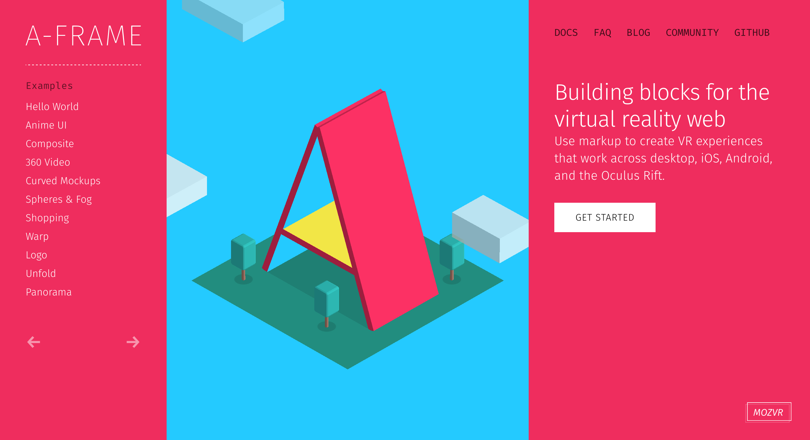
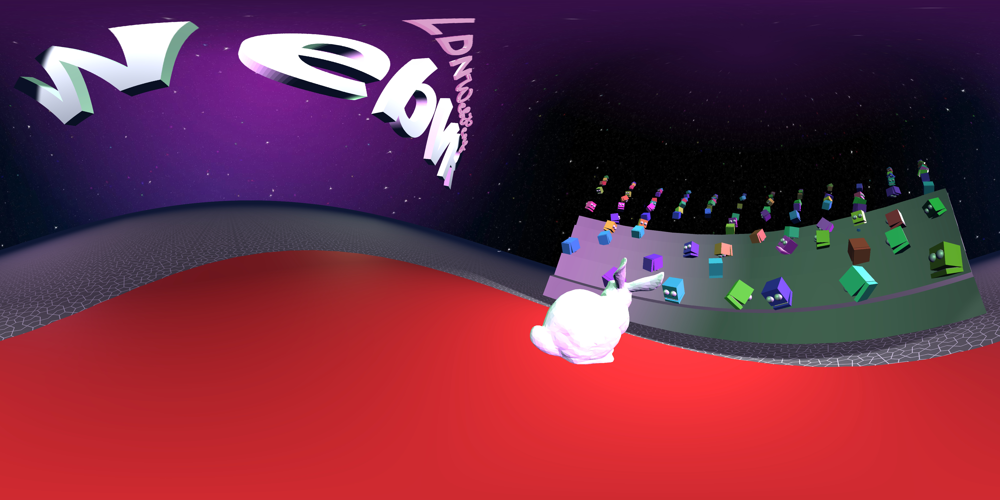
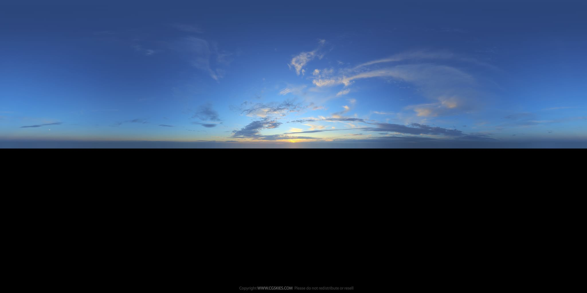
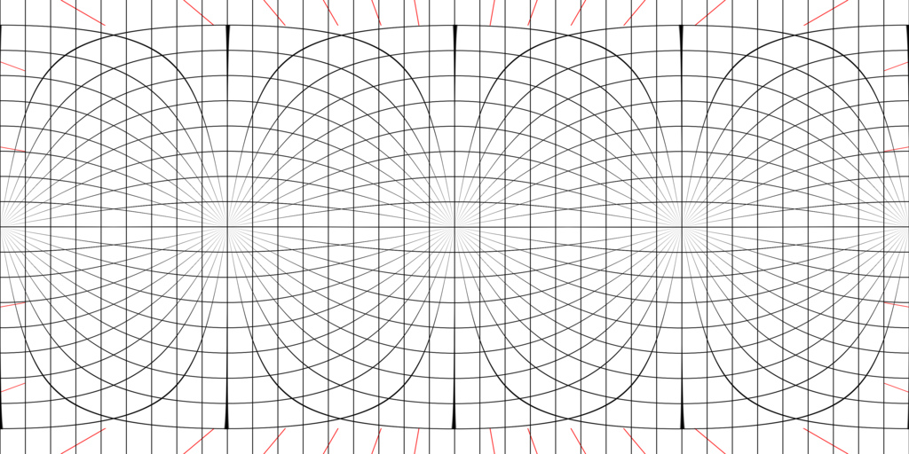
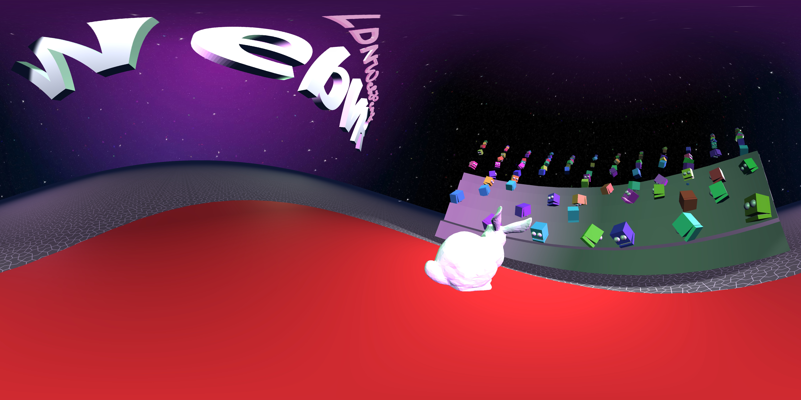
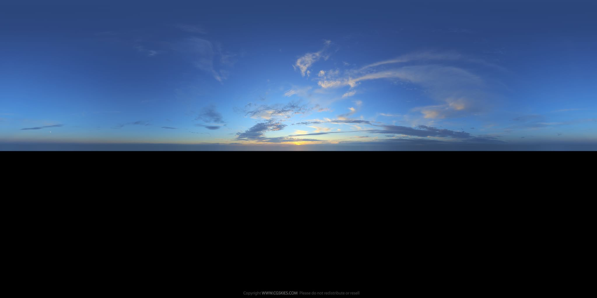
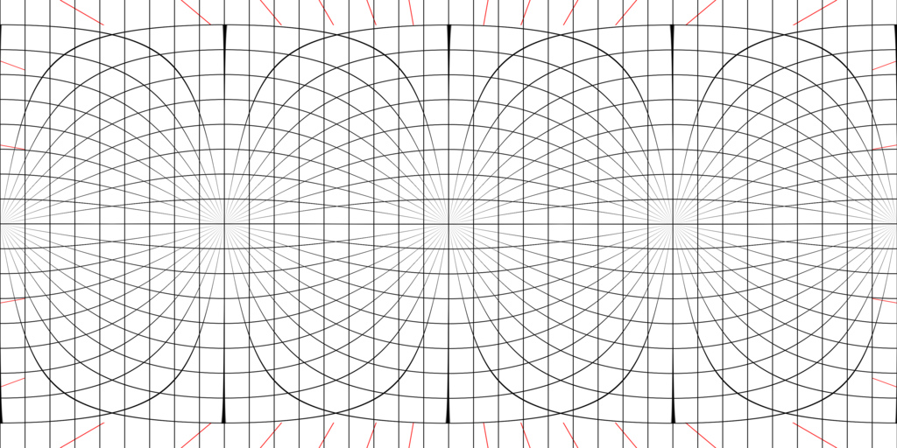

@samsunginternet
@lady_ada_king
How VR works,
It works by sending your position and rotation in real space to the headset.
We can then use this information to render a scene from the users point of view.
We can also render the users hands and use any other information to give the user more agency i nthe scene.
Once we have rendered an image we send it to the headset to be displayed to the user.
Building a virtual world
There are a variety of different types of object that go into building a virtual world.
The most fundamental are:
- Cameras
- 3D Models
- Lighting
For VR the camera represents the user's view, it's position should be where the user's eyes are. By moving the camera the user feels like they are moving.
3D models give the user something to look at, from the floor and sky to the environment, other users and animated creatures. They are all models.
Models have two main parts: Geometry and Texture. The Geometry describes the shape of the model, where all it's points in 3D space are. The texture describes how it looks in the scene. Such as it's colour and how it interacts with light sources.
The lighting is approximate simulations of real world lighting, the main options to choose from are: Ambient, point and directional.
Making 3D Scenes
<HTML>

<html>
<head>
<script src="https://aframe.io/releases/0.6.1/aframe.min.js"></script>
</head>
<body>
<a-scene>
<a-box position="-1 0.5 -3" rotation="0 45 0" color="#4CC3D9"></a-box>
<a-sphere position="0 1.25 -5" radius="1.25" color="#EF2D5E"></a-sphere>
<a-cylinder position="1 0.75 -3" radius="0.5" height="1.5" color="#FFC65D"></a-cylinder>
<a-plane position="0 0 -4" rotation="-90 0 0" width="4" height="4" color="#7BC8A4"></a-plane>
<a-sky color="skyblue"></a-sky>
</a-scene>
</body>
</html>
A-Frame, Web friendly VR!
Who here as done HTML before?
A-Frame is html for virtual reality.
It kinds looks like this and hopefully will make some sense when being read through.
It takes care of a lot of for you, so you can get on with defining some 3D models and it will take care of the camera and lighting until you want to customise it yourself.
Live demo
Buid something
- Introduce Glitch for Online Coding, if wifi is good.
- Show how to add A-Frame script tag.
- Add an a-sphere
- Add a skybox
- Show inspector
- Add an a-plane, rotate it to the floor
- Add a a light and change it.

 





Sky boxes
Sky boxes can be created in a few ways:- Photographed
- Screenshots from A-Frame
- Illustrated by hand [LINK]
Once more with feeling
- Create a new scene,
- Skybox
- Floor
- Import interesting 3D model
- Spot light + shadows
Ada's Fave 3rd Party Components
- Environment
- Physics-System
- Networked A-Frame
<a-entity laser-controls="hand: left"></a-entity>
Interactivity
Introduce cursor and pointer